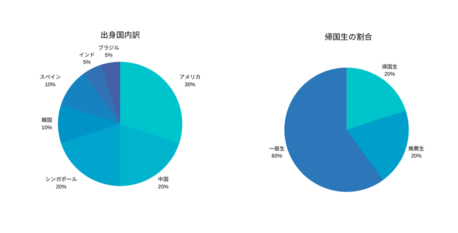

早本には様々なバックグラウンドを持った生徒がいます！


実際に帰国生から一言ずついただきました！
3年F組 吉川 秀樹
出身国:アメリカ
私は8歳から15歳まで7年間アメリカに住んでいました。またアメリカでは現地校に通っていました。SGHなど英語を生かした授業がたくさんあるということでこの学校に入学しました。寮での生活も最初は心配でしたが、すぐになれました。様々なバックグラウンドを持ったほかの生徒と一緒に生活することで毎日学ぶことばかりです。ぜひ入寮して楽しい高校生活を一緒に送りましょう！
3年F組 乾 剛
出身国:アメリカ
僕は10歳から15歳まで5年間アメリカのカリフォルニア州に住んでいました。またアメリカでは現地校に通っていました。兄がこの学校を卒業しているので、僕もこの学校に入りました。寮での生活も最初は心配でしたが、すぐになれました。様々なバックグラウンドを持ったほかの生徒と一緒に生活することで毎日学ぶことばかりです。寮に入れば素晴らしい高校生活を送れること間違いなしです。
3年C組 延壽 一樹
出身国:中国
私は8歳から15歳まで7年間中国に住んでいました。また中国では現地校に通っていました。SGHなど英語を生かした授業がたくさんあるということでこの学校に入学しました。寮での生活も最初は心配でしたが、すぐになれました。様々なバックグラウンドを持ったほかの生徒と一緒に生活することで毎日学ぶことばかりです。ぜひ入寮して楽しい高校生活を一緒に送りましょう！
3年A組 大谷 昌平
出身国:韓国
私は8歳から15歳まで7年間韓国に住んでいました。また韓国では現地校に通っていました。SGHなど英語を生かした授業がたくさんあるということでこの学校に入学しました。寮での生活も最初は心配でしたが、すぐになれました。様々なバックグラウンドを持ったほかの生徒と一緒に生活することで毎日学ぶことばかりです。ぜひ入寮して楽しい高校生活を一緒に送りましょう！
3年A組 渡来 健斗
出身国:インド
私は8歳から15歳まで7年間インドに住んでいました。またインドでは現地校に通っていました。SGHなど英語を生かした授業がたくさんあるということでこの学校に入学しました。寮での生活も最初は心配でしたが、すぐになれました。様々なバックグラウンドを持ったほかの生徒と一緒に生活することで毎日学ぶことばかりです。ぜひ入寮して楽しい高校生活を一緒に送りましょう！
3年A組 高橋 一成
出身国:アメリカ
僕は10歳から15歳まで5年間アメリカのカリフォルニア州に住んでいました。またアメリカでは現地校に通っていました。兄がこの学校を卒業しているので、僕もこの学校に入りました。寮での生活も最初は心配でしたが、すぐになれました。様々なバックグラウンドを持ったほかの生徒と一緒に生活することで毎日学ぶことばかりです。寮に入れば素晴らしい高校生活を送れること間違いなしです。
3年F組 橋本 健太
出身国:アメリカ
私は8歳から15歳まで7年間アメリカに住んでいました。またアメリカでは現地校に通っていました。SGHなど英語を生かした授業がたくさんあるということでこの学校に入学しました。寮での生活も最初は心配でしたが、すぐになれました。様々なバックグラウンドを持ったほかの生徒と一緒に生活することで毎日学ぶことばかりです。ぜひ入寮して楽しい高校生活を一緒に送りましょう！
3年C組 清水 哲人
出身国:中国
私は8歳から15歳まで7年間中国に住んでいました。また中国では現地校に通っていました。SGHなど英語を生かした授業がたくさんあるということでこの学校に入学しました。寮での生活も最初は心配でしたが、すぐになれました。様々なバックグラウンドを持ったほかの生徒と一緒に生活することで毎日学ぶことばかりです。ぜひ入寮して楽しい高校生活を一緒に送りましょう！
3年E組 関根 巧
出身国:シンガポール
私は8歳から15歳まで7年間シンガポールに住んでいました。またシンガポールでは現地校に通っていました。SGHなど英語を生かした授業がたくさんあるということでこの学校に入学しました。寮での生活も最初は心配でしたが、すぐになれました。様々なバックグラウンドを持ったほかの生徒と一緒に生活することで毎日学ぶことばかりです。ぜひ入寮して楽しい高校生活を一緒に送りましょう！
3年F組 宮下 翔也
出身国:ブラジル
私は8歳から15歳まで7年間ブラジルに住んでいました。またブラジルでは現地校に通っていました。SGHなど英語を生かした授業がたくさんあるということでこの学校に入学しました。寮での生活も最初は心配でしたが、すぐになれました。様々なバックグラウンドを持ったほかの生徒と一緒に生活することで毎日学ぶことばかりです。ぜひ入寮して楽しい高校生活を一緒に送りましょう！